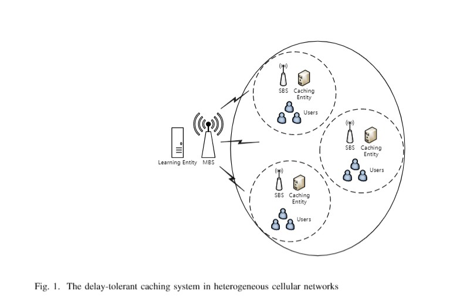

Research
Caching by User Preference with Delayed Feedback for Heterogeneous Cellular Networks
Huang, Z., Hu, B., & Pan, J., Minor Revisions to IEEE Transactions on Wireless Communication
The burgeoning network traffic imposes a huge burden on the network backbone. Caching popular files at the wireless network edge is promising to address the problem. In practice, file popularity is very unlikely to know in advance. Online learning algorithms are effective to learn this uncertainty in a sequential way. In each slot, the learning agent generates a caching policy (\ie the to-be-cached files) and can observe users' feedback about the caching policy within the same slot. This method implicitly requires that all of the users are able to provide feedback promptly. However, in practice, the availability of each individual user is affected by many factors, \eg users are moving out of the service area temporarily, or they may still consume files in the previous slots, which may result in the feedback delay. In this paper, we propose a delay-tolerant wireless caching system that takes both the feedback delay and users' availability into consideration. We frame the content caching problem as \emph{a stochastic combinatorial multi-armed bandit problem with delayed feedback and forced-to-sleep arms}, and devise an intelligent caching algorithm called CFAUD to solve the problem. Also, we show that CFAUD is effective and efficient both theoretically and practically. Finally, experiments are conducted to compare the performance of the proposed algorithm with other well-known algorithms.
